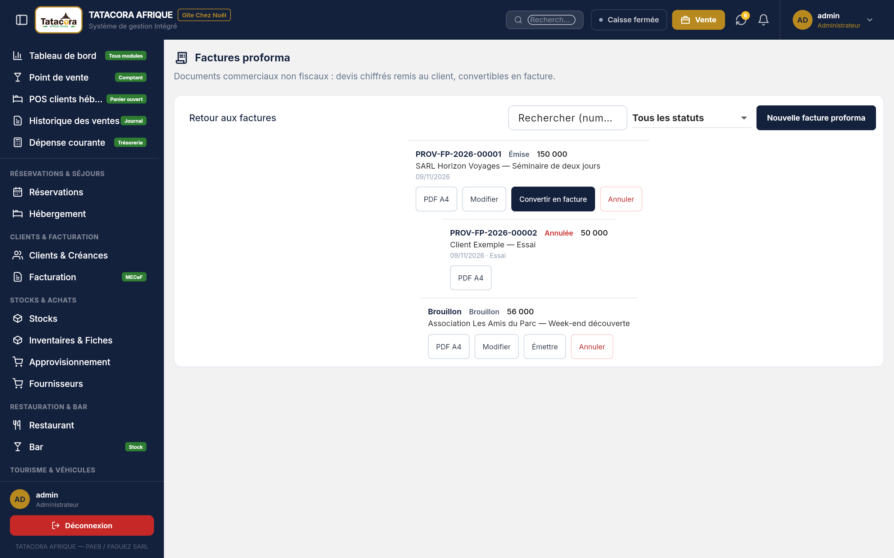
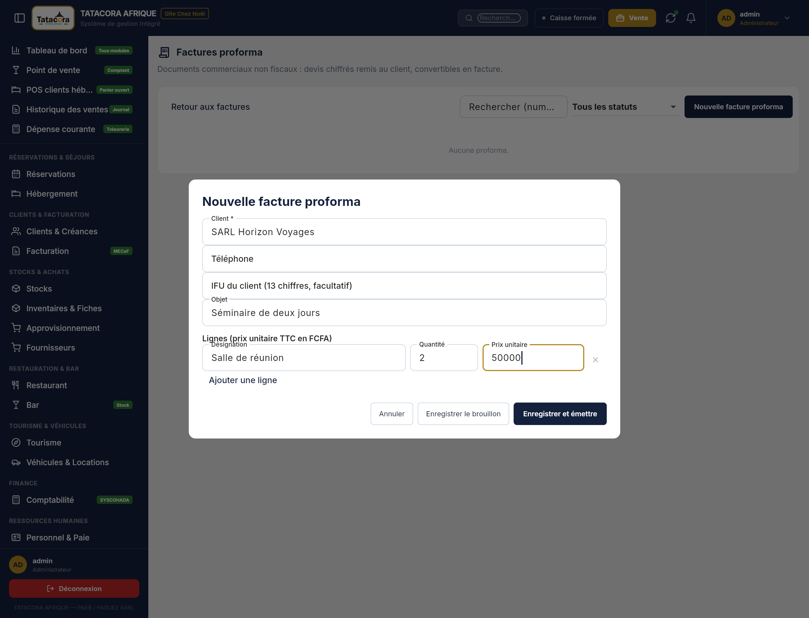
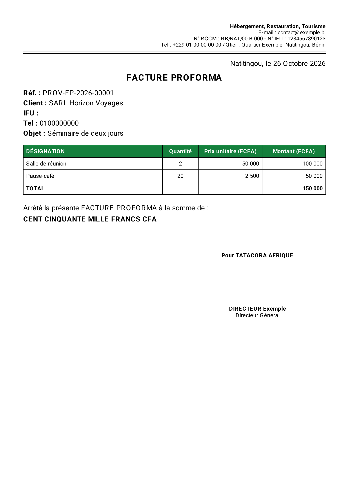

Une facture proforma est un devis chiffré que l'on remet à un client avant la prestation : « voici ce que cela coûtera ». Elle se prépare au poste, même sans Internet, s'imprime en A4 et, si le client accepte, se transforme en vraie facture en un clic. Ce n'est pas une facture : elle n'a aucune valeur fiscale.
🛑 Ce que la proforma n'est PAS La proforma est un document non fiscal. Elle ne porte jamais de numéro MECeF, de QR code ni de mention de normalisation, quel que soit le mode de facturation (chapitre 17). Elle ne crée aucune écriture comptable, ne touche aucun stock et n'encaisse rien. Elle ne se remet jamais à un client comme si c'était une facture.L'écran Factures proforma (sous-titre : « Documents commerciaux non fiscaux : devis chiffrés remis au client, convertibles en facture. ») liste les proformas avec les colonnes Numéro, Date, Client, Objet, Total et Statut. On y trouve une recherche (Rechercher (numéro, client, objet)), un filtre Tous les statuts, le bouton Nouvelle facture proforma et, pour revenir, Retour aux factures. Il est ouvert aux comptes qui ont accès au module Facturation.

Aucune TVA n'est affichée sur la proforma. Un total au-delà de la limite admise est refusé (« Le montant de la proforma dépasse la limite admise. »).

Un bouton Créer une proforma (ou Proforma, en abrégé) existe dans plusieurs modules. Il ouvre la saisie avec le client, l'objet et les lignes déjà remplis à partir de ce qui est enregistré. Les lignes restent toujours modifiables ; rien n'est inventé (une réservation sans tarif donne 0).
| Où | Ce qui est prérempli |
|---|---|
| Véhicules & Locations — un contrat | Le client ; une ligne « véhicule × nombre de jours » au tarif journalier. |
| Tourisme — une réservation de circuit | Le client ; une ligne « circuit × nombre de participants ». |
| Hébergement — une réservation | Le client ; les nuitées au tarif enregistré, plus les lignes de services (les remises ne sont pas reprises). |
| Restauration — événement | Proforma vide : il n'existe pas de module événement qui puisse la préremplir. Vous saisissez le client et les lignes. |
Le numéro d'une proforma a toujours la forme N°0045 FP-GCN/2026 :
| Moment | Numéro |
|---|---|
| Brouillon | Aucun numéro (le PDF porte « BROUILLON — non numérotée »). Un brouillon abandonné ne laisse donc aucun trou dans la suite. |
| Émission en ligne | Le numéro définitif est attribué tout de suite par le serveur. |
| Émission hors ligne (au poste, sans Internet) | Un numéro provisoire de la forme PROV-FP-2026-00012. À la première synchronisation, le serveur le remplace par le numéro définitif. Il n'existe jamais deux numéros définitifs identiques. |
| Annulée | Elle garde son numéro. |
| Statut | Sens | Ce que l'on peut faire |
|---|---|---|
| Brouillon | Enregistrée, sans numéro. | Modifier, Émettre, Annuler. |
| Émise | Numérotée, remise (ou prête à l'être) au client. | Modifier (chaque modification est tracée), PDF A4, Convertir en facture, Annuler. |
| Expirée | Émise dont la date de validité est dépassée (voir 18.5). Ce statut se déduit de la date : il n'est jamais enregistré. | La conversion reste possible, avec confirmation. |
| Convertie | Transformée en facture. Immuable. | Le lien Facture … mène à la facture. |
| Annulée | Abandonnée, avec son motif. | Plus de modification, plus de conversion. |
Une proforma convertie ou annulée n'est plus modifiable (« Cette proforma est … : elle n'est plus modifiable. »).
Deux réglages (Paramètres ➔ Identité & Légal, modifiables sur le web) commandent la validité :
Avec Oui, à l'émission, la date limite est calculée (date d'émission + durée), enregistrée sur la proforma et imprimée : « Valable jusqu'au … ». Changer le réglage plus tard ne touche pas aux proformas déjà émises. Les factures, elles, n'ont pas de date de validité : ce réglage ne vise que les proformas.
Le réglage Afficher la signature et le cachet sur les factures (Oui/Non) décide si le bloc de signature est imprimé. Il vaut pour les proformas et pour les factures A4 ; le ticket n'en porte jamais.
| Réglage | Résultat sur le papier |
|---|---|
| Non | Aucun bloc de signature. |
| Oui, avec images déposées | Le nom et la fonction du signataire, la signature et le cachet. |
| Oui, sans image | Le nom et la fonction du signataire seulement. |
Le nom et la fonction du signataire (Signataire — nom, Signataire — fonction) et les images de la signature et du cachet se règlent sur le web (images de 400 Ko au plus, réduites automatiquement). Le poste reçoit ces images à la synchronisation : sans avoir été synchronisé au moins une fois, un poste neuf n'a pas les images à imprimer.
La proforma s'imprime sur une feuille A4 (bouton PDF A4) qui reprend le modèle papier du Gîte : le titre FACTURE PROFORMA, la référence, les informations du client (nom, IFU, téléphone, objet), le tableau des lignes (Désignation, Quantité, Prix unitaire (FCFA), Montant (FCFA)), le TOTAL, puis la phrase :
« Arrêté la présente FACTURE PROFORMA à la somme de : QUATRE-VINGT MILLE FRANCS CFA. »
Le montant en lettres est calculé par le logiciel, en majuscules, avec les règles de l'orthographe française (« quatre-vingts » prend un s seulement s'il termine le nombre, « cent » aussi quand il est multiplié et terminal, « mille » ne change jamais). Le suffixe est « FRANCS CFA » (« FRANC CFA » pour 0 ou 1). Vous n'avez rien à saisir.

Une proforma déjà convertie ne s'annule pas : on annule alors la facture qui en est issue (avoir, chapitre 17).
Quand le client accepte, Convertir en facture crée une vraie facture, avec le même client, le même IFU, les mêmes lignes et les mêmes montants. La fenêtre le dit : « Une vraie facture sera créée avec le même client, les mêmes lignes et les mêmes montants. La proforma ne sera plus modifiable. Cette conversion ne se fait qu'une fois. » Le bouton Convertir confirme.